# The usual imports
import altair as alt
import geopandas as gpd
import numpy as np
import pandas as pd
from matplotlib import pyplot as pltWeek 5A: More Geospatial Analysis: Urban Networks
- Monday, October 2, 2023
- Section 401
# Show all columns in dataframes
pd.options.display.max_columns = 999# Hide warnings due to issue in shapely package
# See: https://github.com/shapely/shapely/issues/1345
np.seterr(invalid="ignore");Today: Urban street networks and OpenStreetMap (OSM)
- Two tools that make working with OSM data very easy
- What kind of questions can we answer?
- Street orientations
- Mapping event points to streets: car crashes
- Mapping amenities
- Network-constrained distances: accessibility
OSM: what is it?
- Collaborative mapping
- A free editable map of the World
- Sort of like Wikipedia for maps
Great source of data: street networks and a wealth of amenity information
https://www.openstreetmap.org
Working with OSM data
- Raw data is very messy
- Two relatively new, amazing Python packages greatly simply the process
- Related, but complementary features
- OSMnx: downloading and manipulating streets as networks
- Pandana: networks focused on accessibility of amenities
Related: interactive web maps in Python
Part 1: OSMnx
Relatively new package (just a few years old), but quickly becoming the go to package for working with street networks and OpenStreetMap data in Python.
Several key features:
Downloading political boundaries for cities, states, countries, etc
Downloading street networks
Analyzing networks: routing, visualization, statistics
import osmnx as ox1.1. Getting boundary shapefiles from OSM
Key function: geocode_to_gdf() (docs)
We can get the boundary for anything identified as a “place” by OSM.
Important: Be careful to pass the right place name that OSM needs
philly = ox.geocode_to_gdf("Philadelphia, PA")
philly.head()| geometry | bbox_north | bbox_south | bbox_east | bbox_west | place_id | osm_type | osm_id | lat | lon | class | type | place_rank | importance | addresstype | name | display_name | |
|---|---|---|---|---|---|---|---|---|---|---|---|---|---|---|---|---|---|
| 0 | POLYGON ((-75.28030 39.97500, -75.28022 39.974... | 40.137959 | 39.867005 | -74.955831 | -75.280298 | 14128726 | relation | 188022 | 39.952724 | -75.163526 | boundary | administrative | 16 | 0.713797 | city | Philadelphia | Philadelphia, Pennsylvania, United States |
philly.crs<Geographic 2D CRS: EPSG:4326>
Name: WGS 84
Axis Info [ellipsoidal]:
- Lat[north]: Geodetic latitude (degree)
- Lon[east]: Geodetic longitude (degree)
Area of Use:
- name: World.
- bounds: (-180.0, -90.0, 180.0, 90.0)
Datum: World Geodetic System 1984 ensemble
- Ellipsoid: WGS 84
- Prime Meridian: GreenwichWe can plot it just like any other GeoDataFrame
# Project it to Web Mercator first and plot
ax = philly.to_crs(epsg=3857).plot(facecolor="none", edgecolor="black")
ax.set_axis_off()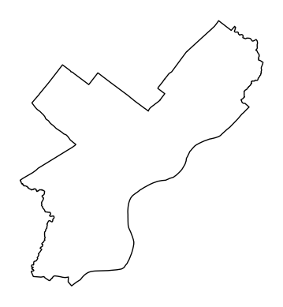
1.2 Projecting with OSMnx
Key function: project_gdf() (docs)
Automatically projects to the Universal Transverse Mercator (UTM) CRS for the UTM zone that the centroid of the polygon lies in
A good, general projection that works for most latitudes except very northern locations.
ax = ox.project_gdf(philly).plot(fc="lightblue", ec="gray")
ax.set_axis_off()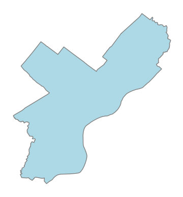
Some more examples:
# Some examples
place1 = ox.geocode_to_gdf("Manhattan, New York City, New York, USA")
place2 = ox.geocode_to_gdf("Miami-Dade County, Florida")
place3 = ox.geocode_to_gdf("Florida, USA")
place4 = ox.geocode_to_gdf("Spain")# Manhattan
ax = ox.project_gdf(place1).plot(fc="lightblue", ec="gray")
ax.set_axis_off()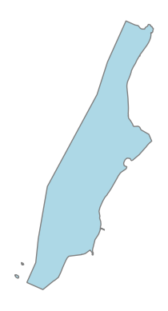
# Miami-Dade County
ax = ox.project_gdf(place2).plot(fc="lightblue", ec="gray")
ax.set_axis_off()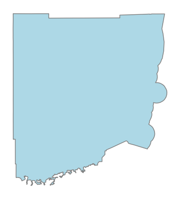
# Florida
ax = ox.project_gdf(place3).plot(fc="lightblue", ec="gray")
ax.set_axis_off()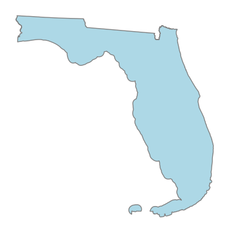
# Spain
ax = ox.project_gdf(place4).plot(fc="lightblue", ec="gray")
ax.set_axis_off()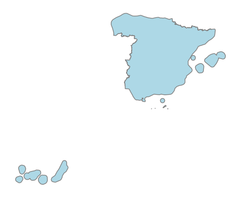
1.3 Downloading OSM features
Key functions: features_from_*
features_from_place()(docs)- Download features within an OSM place boundary
features_from_address()(docs)- Download features within a certain distance of an address
features_from_bbox()(docs)- Download features within a N, S, E, W bounding box
features_from_point()(docs)- Download features within a certain distance of a specified point
features_from_polygon()(docs)- Download features within a polygon object
About OSM features
Important reference: https://wiki.openstreetmap.org/wiki/Map_Features
- OSM uses a tagging system to categorize different map features
- The main feature categories are available on the OSM Wikipedia
- Examples: ‘amenity’, ‘building’, ‘landuse’, ‘highway’
- There are specific sub-categories for each feature type too:
- Amenity examples: ‘bar’, ‘college’, ‘library’
In the language of OSM, the “key” is the main feature category (e.g., amenity) and the “value” is the sub-category type (e.g., “bar”)
osmnx mirrors the key/value syntax of OSM. Use a dict to specify the features you want:
# Get all amenities in Philadelphia
amenities = ox.features_from_place("Philadelphia, PA", tags={"amenity": True})len(amenities)10681amenities.head()| geometry | amenity | created_by | cuisine | name | brand | brand:wikidata | brand:wikipedia | operator | operator:wikidata | operator:wikipedia | short_name | addr:city | addr:housenumber | addr:postcode | addr:state | addr:street | contact:website | official_name | opening_hours | phone | takeaway | source | wheelchair | healthcare | internet_access | url | contact:phone | description | website | wikidata | internet_access:ssid | brewery | alt_name | ele | gnis:county_id | gnis:created | gnis:feature_id | gnis:state_id | religion | historic:amenity | old_name | denomination | building | comment | operator:type | school | wikipedia | gnis:edited | check_date | craft | microbrewery | restaurant | contact:facebook | name:en | social_facility | operator:short | emergency | healthcare:speciality | bicycle_parking | capacity | covered | barrier | atm | attraction | gnis:county_name | gnis:import_uuid | gnis:reviewed | internet_access:fee | addr:county | addr:country | outdoor_seating | artist_name | artwork_subject | artwork_type | image | start_date | statue | subject:wikidata | tourism | reservation | website:menu | air_conditioning | shop | training | toilets:wheelchair | addr:housename | bottle | parking | designation | not:brand:wikidata | dispensing | drive_through | check_date:opening_hours | opening_hours:signed | screen | delivery | diet:vegan | payment:cash | payment:coins | indoor_seating | smoking | architect | contact:instagram | collection_times | ref | male | female | fee | diet:vegetarian | fax | bar | source:pkey | fixme | access | changing_table | toilets | name:zh | addr:full | entrance | level | name:he | fuel:biodiesel | fuel:biogas | fuel:cng | fuel:diesel | fuel:e10 | fuel:e85 | fuel:electricity | sport | wifi | collection_times:signed | ref:signed | drive_in | check_date:collection_times | food | toilets:access | payment:bitcoin | diet:halal | disused:amenity | branch | self_service | diet:meat | note | leisure | drink:club-mate | car_wash | compressed_air | toilets:disposal | unisex | contact:twitter | currency:XBT | diet:pescetarian | lgbtq | payment:credit_cards | payment:debit_cards | park_ride | supervised | landuse | flickr | contact:email | service_times | youtube | source:cuisine | social_facility:for | disused:shop | toilets:position | maxheight | wheelchair:description | wheelchair:description:en | layer | service:bicycle:chain_tool | service:bicycle:pump | currency:USD | drink:coca-cola | drink:coke | drink:cola | drink:cola_zero | drink:soda | drink:water | vending | opening_hours:kitchen | bicycle_rental | network | network:wikidata | network:wikipedia | amenity_1 | recycling:computers | recycling:tv_monitor | recycling_type | ferry | public_transport | toilets:unisex | kitchen_hours | animal | addr:unit | was:amenity | was:cuisine | was:delivery | was:drive_through | was:name | was:outdoor_seating | was:takeaway | direction | backrest | service:bicycle:repair | payment:cards | name:es | diet:kosher | theatre:genre | service:bicycle:tools | beds | payment:visa | cash_in | currency:BCH | currency:LTC | office | date | display | faces | studio | name:ca | bench | lit | shelter_type | addr:city:ar | name:ar | colour | material | fountain | addr:block_number | seats | brand:type | indoor | parcel_locker:type | parcel_mail_in | parcel_pickup | historic | type | payment:american_express | payment:discover_card | payment:mastercard | dog | recycling:beverage_cartons | recycling:cans | recycling:glass_bottles | recycling:paper | recycling:plastic | recycling:plastic_bottles | recycling:plastic_packaging | portable | toilets:handwashing | opening_hours:drive_through | internet_access:description | name:vi | payment:cheque | min_age | bus | tram | waste | payment:cash_app | payment:venmo | seating | street_vendor | theatre:type | smoothness | surface | brand:en | brand:zh | location | drinking_water | height | fridge | wikimedia_commons | opening_hours:covid19 | diet:healthy | abandoned:amenity | memorial | payment:lightning | payment:lightning_contactless | payment:onchain | country | payment:contactless | delivery:partner | internet_access:password | post_box:type | description:en | inscription | check_date:currency:XBT | public_bookcase:type | urgent_care | diet:gluten_free | community_centre:for | community_centre | animal_shelter | name:etymology | name:etymology:wikidata | mobile | social_centre:for | nodes | building:levels | capacity:disabled | building:floor | ref:nrhp | vehicle | natural | water | building:use | ship:type | roof:shape | automated | brand:website | building:material | source:name | roof:levels | roof:material | access:conditional | rite | heritage | heritage:operator | architect:wikidata | building:levels:underground | heritage:website | nrhp:criteria | nrhp:inscription_date | building:colour | area | check_date:compressed_air | gnis:fcode | nonsquare | name:ja | name:zn | roof:orientation | happy_hours | building:part | elevation | historic:name | grades | maxstay | monastery:type | library | theme | owner | loc_name | drink | bin | police | school:type | old_name1 | old_name2 | fuel:octane_95 | fuel:gasoline | fuel:octane_87 | healthcare:counselling | orientation | parking:orientation | protection_title | source_ref | parking_space | ways | healthcare:for | ||||||
|---|---|---|---|---|---|---|---|---|---|---|---|---|---|---|---|---|---|---|---|---|---|---|---|---|---|---|---|---|---|---|---|---|---|---|---|---|---|---|---|---|---|---|---|---|---|---|---|---|---|---|---|---|---|---|---|---|---|---|---|---|---|---|---|---|---|---|---|---|---|---|---|---|---|---|---|---|---|---|---|---|---|---|---|---|---|---|---|---|---|---|---|---|---|---|---|---|---|---|---|---|---|---|---|---|---|---|---|---|---|---|---|---|---|---|---|---|---|---|---|---|---|---|---|---|---|---|---|---|---|---|---|---|---|---|---|---|---|---|---|---|---|---|---|---|---|---|---|---|---|---|---|---|---|---|---|---|---|---|---|---|---|---|---|---|---|---|---|---|---|---|---|---|---|---|---|---|---|---|---|---|---|---|---|---|---|---|---|---|---|---|---|---|---|---|---|---|---|---|---|---|---|---|---|---|---|---|---|---|---|---|---|---|---|---|---|---|---|---|---|---|---|---|---|---|---|---|---|---|---|---|---|---|---|---|---|---|---|---|---|---|---|---|---|---|---|---|---|---|---|---|---|---|---|---|---|---|---|---|---|---|---|---|---|---|---|---|---|---|---|---|---|---|---|---|---|---|---|---|---|---|---|---|---|---|---|---|---|---|---|---|---|---|---|---|---|---|---|---|---|---|---|---|---|---|---|---|---|---|---|---|---|---|---|---|---|---|---|---|---|---|---|---|---|---|---|---|---|---|---|---|---|---|---|---|---|---|---|---|---|---|---|---|---|---|---|---|---|---|---|---|---|---|---|---|---|---|---|---|---|---|---|---|---|---|---|---|
| element_type | osmid | |||||||||||||||||||||||||||||||||||||||||||||||||||||||||||||||||||||||||||||||||||||||||||||||||||||||||||||||||||||||||||||||||||||||||||||||||||||||||||||||||||||||||||||||||||||||||||||||||||||||||||||||||||||||||||||||||||||||||||||||||||||||||||||||||||||||||||||||||||||||||||||||||||||||||||||||||||||||||||||||||||||||||||||||||||||||||||||||||||||||||||||
| node | 109811385 | POINT (-75.19487 40.05846) | bench | NaN | NaN | NaN | NaN | NaN | NaN | NaN | NaN | NaN | NaN | NaN | NaN | NaN | NaN | NaN | NaN | NaN | NaN | NaN | NaN | NaN | NaN | NaN | NaN | NaN | NaN | NaN | NaN | NaN | NaN | NaN | NaN | NaN | NaN | NaN | NaN | NaN | NaN | NaN | NaN | NaN | NaN | NaN | NaN | NaN | NaN | NaN | NaN | NaN | NaN | NaN | NaN | NaN | NaN | NaN | NaN | NaN | NaN | NaN | NaN | NaN | NaN | NaN | NaN | NaN | NaN | NaN | NaN | NaN | NaN | NaN | NaN | NaN | NaN | NaN | NaN | NaN | NaN | NaN | NaN | NaN | NaN | NaN | NaN | NaN | NaN | NaN | NaN | NaN | NaN | NaN | NaN | NaN | NaN | NaN | NaN | NaN | NaN | NaN | NaN | NaN | NaN | NaN | NaN | NaN | NaN | NaN | NaN | NaN | NaN | NaN | NaN | NaN | NaN | NaN | NaN | NaN | NaN | NaN | NaN | NaN | NaN | NaN | NaN | NaN | NaN | NaN | NaN | NaN | NaN | NaN | NaN | NaN | NaN | NaN | NaN | NaN | NaN | NaN | NaN | NaN | NaN | NaN | NaN | NaN | NaN | NaN | NaN | NaN | NaN | NaN | NaN | NaN | NaN | NaN | NaN | NaN | NaN | NaN | NaN | NaN | NaN | NaN | NaN | NaN | NaN | NaN | NaN | NaN | NaN | NaN | NaN | NaN | NaN | NaN | NaN | NaN | NaN | NaN | NaN | NaN | NaN | NaN | NaN | NaN | NaN | NaN | NaN | NaN | NaN | NaN | NaN | NaN | NaN | NaN | NaN | NaN | NaN | NaN | NaN | NaN | NaN | NaN | NaN | NaN | NaN | NaN | NaN | NaN | NaN | NaN | NaN | NaN | NaN | NaN | NaN | NaN | NaN | NaN | NaN | NaN | NaN | NaN | NaN | NaN | NaN | NaN | NaN | NaN | NaN | NaN | NaN | NaN | NaN | NaN | NaN | NaN | NaN | NaN | NaN | NaN | NaN | NaN | NaN | NaN | NaN | NaN | NaN | NaN | NaN | NaN | NaN | NaN | NaN | NaN | NaN | NaN | NaN | NaN | NaN | NaN | NaN | NaN | NaN | NaN | NaN | NaN | NaN | NaN | NaN | NaN | NaN | NaN | NaN | NaN | NaN | NaN | NaN | NaN | NaN | NaN | NaN | NaN | NaN | NaN | NaN | NaN | NaN | NaN | NaN | NaN | NaN | NaN | NaN | NaN | NaN | NaN | NaN | NaN | NaN | NaN | NaN | NaN | NaN | NaN | NaN | NaN | NaN | NaN | NaN | NaN | NaN | NaN | NaN | NaN | NaN | NaN | NaN | NaN | NaN | NaN | NaN | NaN | NaN | NaN | NaN | NaN | NaN | NaN | NaN | NaN | NaN | NaN | NaN | NaN | NaN | NaN | NaN | NaN | NaN | NaN | NaN | NaN | NaN | NaN | NaN | NaN | NaN | NaN | NaN | NaN | NaN | NaN | NaN | NaN | NaN | NaN | NaN | NaN | NaN | NaN | NaN | NaN |
| 274215467 | POINT (-75.19492 39.95935) | fast_food | Potlatch 0.9c | pizza | Powelton Pizza | NaN | NaN | NaN | NaN | NaN | NaN | NaN | NaN | NaN | NaN | NaN | NaN | NaN | NaN | NaN | NaN | NaN | NaN | NaN | NaN | NaN | NaN | NaN | NaN | NaN | NaN | NaN | NaN | NaN | NaN | NaN | NaN | NaN | NaN | NaN | NaN | NaN | NaN | NaN | NaN | NaN | NaN | NaN | NaN | NaN | NaN | NaN | NaN | NaN | NaN | NaN | NaN | NaN | NaN | NaN | NaN | NaN | NaN | NaN | NaN | NaN | NaN | NaN | NaN | NaN | NaN | NaN | NaN | NaN | NaN | NaN | NaN | NaN | NaN | NaN | NaN | NaN | NaN | NaN | NaN | NaN | NaN | NaN | NaN | NaN | NaN | NaN | NaN | NaN | NaN | NaN | NaN | NaN | NaN | NaN | NaN | NaN | NaN | NaN | NaN | NaN | NaN | NaN | NaN | NaN | NaN | NaN | NaN | NaN | NaN | NaN | NaN | NaN | NaN | NaN | NaN | NaN | NaN | NaN | NaN | NaN | NaN | NaN | NaN | NaN | NaN | NaN | NaN | NaN | NaN | NaN | NaN | NaN | NaN | NaN | NaN | NaN | NaN | NaN | NaN | NaN | NaN | NaN | NaN | NaN | NaN | NaN | NaN | NaN | NaN | NaN | NaN | NaN | NaN | NaN | NaN | NaN | NaN | NaN | NaN | NaN | NaN | NaN | NaN | NaN | NaN | NaN | NaN | NaN | NaN | NaN | NaN | NaN | NaN | NaN | NaN | NaN | NaN | NaN | NaN | NaN | NaN | NaN | NaN | NaN | NaN | NaN | NaN | NaN | NaN | NaN | NaN | NaN | NaN | NaN | NaN | NaN | NaN | NaN | NaN | NaN | NaN | NaN | NaN | NaN | NaN | NaN | NaN | NaN | NaN | NaN | NaN | NaN | NaN | NaN | NaN | NaN | NaN | NaN | NaN | NaN | NaN | NaN | NaN | NaN | NaN | NaN | NaN | NaN | NaN | NaN | NaN | NaN | NaN | NaN | NaN | NaN | NaN | NaN | NaN | NaN | NaN | NaN | NaN | NaN | NaN | NaN | NaN | NaN | NaN | NaN | NaN | NaN | NaN | NaN | NaN | NaN | NaN | NaN | NaN | NaN | NaN | NaN | NaN | NaN | NaN | NaN | NaN | NaN | NaN | NaN | NaN | NaN | NaN | NaN | NaN | NaN | NaN | NaN | NaN | NaN | NaN | NaN | NaN | NaN | NaN | NaN | NaN | NaN | NaN | NaN | NaN | NaN | NaN | NaN | NaN | NaN | NaN | NaN | NaN | NaN | NaN | NaN | NaN | NaN | NaN | NaN | NaN | NaN | NaN | NaN | NaN | NaN | NaN | NaN | NaN | NaN | NaN | NaN | NaN | NaN | NaN | NaN | NaN | NaN | NaN | NaN | NaN | NaN | NaN | NaN | NaN | NaN | NaN | NaN | NaN | NaN | NaN | NaN | NaN | NaN | NaN | NaN | NaN | NaN | NaN | NaN | NaN | NaN | NaN | NaN | NaN | NaN | NaN | NaN | NaN | NaN | NaN | NaN | NaN | |
| 274216093 | POINT (-75.19125 39.95764) | atm | NaN | NaN | Citibank | Citibank | Q857063 | en:Citibank | Citibank | Q857063 | en:Citibank | Citi | NaN | NaN | NaN | NaN | NaN | NaN | NaN | NaN | NaN | NaN | NaN | NaN | NaN | NaN | NaN | NaN | NaN | NaN | NaN | NaN | NaN | NaN | NaN | NaN | NaN | NaN | NaN | NaN | NaN | NaN | NaN | NaN | NaN | NaN | NaN | NaN | NaN | NaN | NaN | NaN | NaN | NaN | NaN | NaN | NaN | NaN | NaN | NaN | NaN | NaN | NaN | NaN | NaN | NaN | NaN | NaN | NaN | NaN | NaN | NaN | NaN | NaN | NaN | NaN | NaN | NaN | NaN | NaN | NaN | NaN | NaN | NaN | NaN | NaN | NaN | NaN | NaN | NaN | NaN | NaN | NaN | NaN | NaN | NaN | NaN | NaN | NaN | NaN | NaN | NaN | NaN | NaN | NaN | NaN | NaN | NaN | NaN | NaN | NaN | NaN | NaN | NaN | NaN | NaN | NaN | NaN | NaN | NaN | NaN | NaN | NaN | NaN | NaN | NaN | NaN | NaN | NaN | NaN | NaN | NaN | NaN | NaN | NaN | NaN | NaN | NaN | NaN | NaN | NaN | NaN | NaN | NaN | NaN | NaN | NaN | NaN | NaN | NaN | NaN | NaN | NaN | NaN | NaN | NaN | NaN | NaN | NaN | NaN | NaN | NaN | NaN | NaN | NaN | NaN | NaN | NaN | NaN | NaN | NaN | NaN | NaN | NaN | NaN | NaN | NaN | NaN | NaN | NaN | NaN | NaN | NaN | NaN | NaN | NaN | NaN | NaN | NaN | NaN | NaN | NaN | NaN | NaN | NaN | NaN | NaN | NaN | NaN | NaN | NaN | NaN | NaN | NaN | NaN | NaN | NaN | NaN | NaN | NaN | NaN | NaN | NaN | NaN | NaN | NaN | NaN | NaN | NaN | NaN | NaN | NaN | NaN | NaN | NaN | NaN | NaN | NaN | NaN | NaN | NaN | NaN | NaN | NaN | NaN | NaN | NaN | NaN | NaN | NaN | NaN | NaN | NaN | NaN | NaN | NaN | NaN | NaN | NaN | NaN | NaN | NaN | NaN | NaN | NaN | NaN | NaN | NaN | NaN | NaN | NaN | NaN | NaN | NaN | NaN | NaN | NaN | NaN | NaN | NaN | NaN | NaN | NaN | NaN | NaN | NaN | NaN | NaN | NaN | NaN | NaN | NaN | NaN | NaN | NaN | NaN | NaN | NaN | NaN | NaN | NaN | NaN | NaN | NaN | NaN | NaN | NaN | NaN | NaN | NaN | NaN | NaN | NaN | NaN | NaN | NaN | NaN | NaN | NaN | NaN | NaN | NaN | NaN | NaN | NaN | NaN | NaN | NaN | NaN | NaN | NaN | NaN | NaN | NaN | NaN | NaN | NaN | NaN | NaN | NaN | NaN | NaN | NaN | NaN | NaN | NaN | NaN | NaN | NaN | NaN | NaN | NaN | NaN | NaN | NaN | NaN | NaN | NaN | NaN | NaN | NaN | NaN | NaN | NaN | NaN | NaN | NaN | NaN | NaN | NaN | NaN | NaN | NaN | NaN | NaN | |
| 274217596 | POINT (-75.19229 39.95301) | cafe | NaN | coffee_shop | Starbucks | Starbucks | Q37158 | en:Starbucks | NaN | NaN | NaN | NaN | Philadelphia | 3401 | 19104 | PA | Walnut Street | https://www.starbucks.com/store-locator/store/... | Starbucks Coffee | Mo-Fr 05:30-24:00; Sa,Su 06:00-24:00 | 215-387-1914 | yes | NaN | NaN | NaN | NaN | NaN | NaN | NaN | NaN | NaN | NaN | NaN | NaN | NaN | NaN | NaN | NaN | NaN | NaN | NaN | NaN | NaN | NaN | NaN | NaN | NaN | NaN | NaN | NaN | NaN | NaN | NaN | NaN | NaN | NaN | NaN | NaN | NaN | NaN | NaN | NaN | NaN | NaN | NaN | NaN | NaN | NaN | NaN | NaN | NaN | NaN | NaN | NaN | NaN | NaN | NaN | NaN | NaN | NaN | NaN | NaN | NaN | NaN | NaN | NaN | NaN | NaN | NaN | NaN | NaN | NaN | NaN | NaN | NaN | NaN | NaN | NaN | NaN | NaN | NaN | NaN | NaN | NaN | NaN | NaN | NaN | NaN | NaN | NaN | NaN | NaN | NaN | NaN | NaN | NaN | NaN | NaN | NaN | NaN | NaN | NaN | NaN | NaN | NaN | NaN | NaN | NaN | NaN | NaN | NaN | NaN | NaN | NaN | NaN | NaN | NaN | NaN | NaN | NaN | NaN | NaN | NaN | NaN | NaN | NaN | NaN | NaN | NaN | NaN | NaN | NaN | NaN | NaN | NaN | NaN | NaN | NaN | NaN | NaN | NaN | NaN | NaN | NaN | NaN | NaN | NaN | NaN | NaN | NaN | NaN | NaN | NaN | NaN | NaN | NaN | NaN | NaN | NaN | NaN | NaN | NaN | NaN | NaN | NaN | NaN | NaN | NaN | NaN | NaN | NaN | NaN | NaN | NaN | NaN | NaN | NaN | NaN | NaN | NaN | NaN | NaN | NaN | NaN | NaN | NaN | NaN | NaN | NaN | NaN | NaN | NaN | NaN | NaN | NaN | NaN | NaN | NaN | NaN | NaN | NaN | NaN | NaN | NaN | NaN | NaN | NaN | NaN | NaN | NaN | NaN | NaN | NaN | NaN | NaN | NaN | NaN | NaN | NaN | NaN | NaN | NaN | NaN | NaN | NaN | NaN | NaN | NaN | NaN | NaN | NaN | NaN | NaN | NaN | NaN | NaN | NaN | NaN | NaN | NaN | NaN | NaN | NaN | NaN | NaN | NaN | NaN | NaN | NaN | NaN | NaN | NaN | NaN | NaN | NaN | NaN | NaN | NaN | NaN | NaN | NaN | NaN | NaN | NaN | NaN | NaN | NaN | NaN | NaN | NaN | NaN | NaN | NaN | NaN | NaN | NaN | NaN | NaN | NaN | NaN | NaN | NaN | NaN | NaN | NaN | NaN | NaN | NaN | NaN | NaN | NaN | NaN | NaN | NaN | NaN | NaN | NaN | NaN | NaN | NaN | NaN | NaN | NaN | NaN | NaN | NaN | NaN | NaN | NaN | NaN | NaN | NaN | NaN | NaN | NaN | NaN | NaN | NaN | NaN | NaN | NaN | NaN | NaN | NaN | NaN | NaN | NaN | NaN | NaN | NaN | NaN | NaN | NaN | NaN | NaN | NaN | NaN | NaN | NaN | NaN | NaN | NaN | NaN | NaN | NaN | |
| 313440966 | POINT (-75.16694 39.96394) | car_sharing | Potlatch 0.10f | NaN | NaN | NaN | NaN | NaN | NaN | NaN | NaN | NaN | NaN | NaN | NaN | NaN | NaN | NaN | NaN | NaN | NaN | NaN | local_knowledge | NaN | NaN | NaN | NaN | NaN | NaN | NaN | NaN | NaN | NaN | NaN | NaN | NaN | NaN | NaN | NaN | NaN | NaN | NaN | NaN | NaN | NaN | NaN | NaN | NaN | NaN | NaN | NaN | NaN | NaN | NaN | NaN | NaN | NaN | NaN | NaN | NaN | NaN | NaN | NaN | NaN | NaN | NaN | NaN | NaN | NaN | NaN | NaN | NaN | NaN | NaN | NaN | NaN | NaN | NaN | NaN | NaN | NaN | NaN | NaN | NaN | NaN | NaN | NaN | NaN | NaN | NaN | NaN | NaN | NaN | NaN | NaN | NaN | NaN | NaN | NaN | NaN | NaN | NaN | NaN | NaN | NaN | NaN | NaN | NaN | NaN | NaN | NaN | NaN | NaN | NaN | NaN | NaN | NaN | NaN | NaN | NaN | NaN | NaN | NaN | NaN | NaN | NaN | NaN | NaN | NaN | NaN | NaN | NaN | NaN | NaN | NaN | NaN | NaN | NaN | NaN | NaN | NaN | NaN | NaN | NaN | NaN | NaN | NaN | NaN | NaN | NaN | NaN | NaN | NaN | NaN | NaN | NaN | NaN | NaN | NaN | NaN | NaN | NaN | NaN | NaN | NaN | NaN | NaN | NaN | NaN | NaN | NaN | NaN | NaN | NaN | NaN | NaN | NaN | NaN | NaN | NaN | NaN | NaN | NaN | NaN | NaN | NaN | NaN | NaN | NaN | NaN | NaN | NaN | NaN | NaN | NaN | NaN | NaN | NaN | NaN | NaN | NaN | NaN | NaN | NaN | NaN | NaN | NaN | NaN | NaN | NaN | NaN | NaN | NaN | NaN | NaN | NaN | NaN | NaN | NaN | NaN | NaN | NaN | NaN | NaN | NaN | NaN | NaN | NaN | NaN | NaN | NaN | NaN | NaN | NaN | NaN | NaN | NaN | NaN | NaN | NaN | NaN | NaN | NaN | NaN | NaN | NaN | NaN | NaN | NaN | NaN | NaN | NaN | NaN | NaN | NaN | NaN | NaN | NaN | NaN | NaN | NaN | NaN | NaN | NaN | NaN | NaN | NaN | NaN | NaN | NaN | NaN | NaN | NaN | NaN | NaN | NaN | NaN | NaN | NaN | NaN | NaN | NaN | NaN | NaN | NaN | NaN | NaN | NaN | NaN | NaN | NaN | NaN | NaN | NaN | NaN | NaN | NaN | NaN | NaN | NaN | NaN | NaN | NaN | NaN | NaN | NaN | NaN | NaN | NaN | NaN | NaN | NaN | NaN | NaN | NaN | NaN | NaN | NaN | NaN | NaN | NaN | NaN | NaN | NaN | NaN | NaN | NaN | NaN | NaN | NaN | NaN | NaN | NaN | NaN | NaN | NaN | NaN | NaN | NaN | NaN | NaN | NaN | NaN | NaN | NaN | NaN | NaN | NaN | NaN | NaN | NaN | NaN | NaN | NaN | NaN | NaN | NaN | NaN | NaN | NaN | NaN | NaN | NaN | NaN | NaN |
# Get all bars in philadelphia
bars = ox.features_from_place("Philadelphia, PA", tags={"amenity": "bar"})len(bars)166bars.head()| addr:city | addr:housenumber | addr:postcode | addr:state | addr:street | amenity | brewery | craft | gnis:county_id | microbrewery | name | operator | restaurant | website | wikidata | wikipedia | geometry | contact:phone | contact:website | description | opening_hours | outdoor_seating | check_date | contact:facebook | phone | air_conditioning | smoking | toilets:wheelchair | wheelchair | check_date:opening_hours | opening_hours:signed | indoor_seating | designation | addr:housename | source | wifi | leisure | sport | cuisine | diet:vegan | diet:vegetarian | food | internet_access | brand | brand:wikidata | wheelchair:description | fixme | name:en | name:es | addr:unit | min_age | alt_name | level | height | nodes | atm | building | building:levels | nonsquare | heritage | |||
|---|---|---|---|---|---|---|---|---|---|---|---|---|---|---|---|---|---|---|---|---|---|---|---|---|---|---|---|---|---|---|---|---|---|---|---|---|---|---|---|---|---|---|---|---|---|---|---|---|---|---|---|---|---|---|---|---|---|---|---|---|---|---|
| element_type | osmid | |||||||||||||||||||||||||||||||||||||||||||||||||||||||||||||
| node | 357303425 | Philadelphia | 500 | 19123 | PA | Spring Garden Street | bar | yes | brewery | 101 | yes | Yards Brewing Company | Yards Brewing Company | yes | https://yardsbrewing.com/ | Q16903914 | en:Yards Brewing Company | POINT (-75.14712 39.96067) | NaN | NaN | NaN | NaN | NaN | NaN | NaN | NaN | NaN | NaN | NaN | NaN | NaN | NaN | NaN | NaN | NaN | NaN | NaN | NaN | NaN | NaN | NaN | NaN | NaN | NaN | NaN | NaN | NaN | NaN | NaN | NaN | NaN | NaN | NaN | NaN | NaN | NaN | NaN | NaN | NaN | NaN | NaN | NaN |
| 655425272 | NaN | NaN | NaN | NaN | NaN | bar | NaN | NaN | NaN | NaN | Drinkers West | NaN | NaN | NaN | NaN | NaN | POINT (-75.20020 39.95521) | NaN | NaN | NaN | NaN | NaN | NaN | NaN | NaN | NaN | NaN | NaN | NaN | NaN | NaN | NaN | NaN | NaN | NaN | NaN | NaN | NaN | NaN | NaN | NaN | NaN | NaN | NaN | NaN | NaN | NaN | NaN | NaN | NaN | NaN | NaN | NaN | NaN | NaN | NaN | NaN | NaN | NaN | NaN | NaN | |
| 1033935437 | NaN | 2101 | NaN | NaN | Chestnut Street | bar | NaN | NaN | NaN | NaN | Mix Bar & Grill | NaN | NaN | NaN | NaN | NaN | POINT (-75.17552 39.95242) | +1 215-568-3355 | https://mixbarandgrillphilly.com/location/mix-... | The bar is open until whenever the rush ends. | Mo-We,Su 11:00-22:00; Th-Sa 11:00-23:00 | yes | NaN | NaN | NaN | NaN | NaN | NaN | NaN | NaN | NaN | NaN | NaN | NaN | NaN | NaN | NaN | NaN | NaN | NaN | NaN | NaN | NaN | NaN | NaN | NaN | NaN | NaN | NaN | NaN | NaN | NaN | NaN | NaN | NaN | NaN | NaN | NaN | NaN | NaN | NaN | |
| 1167079387 | NaN | 401 | NaN | NaN | South Street | bar | NaN | NaN | NaN | NaN | MilkBoy South Street | NaN | NaN | NaN | NaN | NaN | POINT (-75.14925 39.94170) | +1 215-925-6455 | https://www.milkboy.tv/southstreet | NaN | Mo-Tu,Su 11:00-24:00; We-Sa 11:00-25:00 | NaN | 2023-04-12 | https://www.facebook.com/milkboysouthstreet | NaN | NaN | NaN | NaN | NaN | NaN | NaN | NaN | NaN | NaN | NaN | NaN | NaN | NaN | NaN | NaN | NaN | NaN | NaN | NaN | NaN | NaN | NaN | NaN | NaN | NaN | NaN | NaN | NaN | NaN | NaN | NaN | NaN | NaN | NaN | NaN | NaN | |
| 1204761128 | NaN | NaN | NaN | NaN | NaN | bar | NaN | NaN | NaN | NaN | Vikings High School Club | NaN | NaN | NaN | NaN | NaN | POINT (-75.16363 39.92685) | NaN | NaN | NaN | NaN | NaN | NaN | NaN | NaN | NaN | NaN | NaN | NaN | NaN | NaN | NaN | NaN | NaN | NaN | NaN | NaN | NaN | NaN | NaN | NaN | NaN | NaN | NaN | NaN | NaN | NaN | NaN | NaN | NaN | NaN | NaN | NaN | NaN | NaN | NaN | NaN | NaN | NaN | NaN | NaN |
# Get bar, pub, and restaurant features in Philadelphia
food_and_drink = ox.features_from_place(
"Philadelphia, PA", tags={"amenity": ["pub", "bar", "restaurant"]}
)len(food_and_drink)1078food_and_drink.head()| amenity | created_by | name | source | wheelchair | geometry | addr:city | addr:housenumber | addr:postcode | addr:state | addr:street | brewery | opening_hours | craft | gnis:county_id | microbrewery | operator | restaurant | website | wikidata | wikipedia | cuisine | outdoor_seating | brand | brand:wikidata | check_date | contact:facebook | contact:website | phone | reservation | website:menu | description | designation | not:brand:wikidata | check_date:opening_hours | opening_hours:signed | contact:phone | contact:instagram | internet_access | diet:vegan | diet:vegetarian | fax | air_conditioning | smoking | bar | takeaway | addr:housename | toilets:wheelchair | addr:country | alt_name | short_name | name:zh | level | indoor_seating | sport | wifi | delivery | drive_in | payment:cash | food | payment:bitcoin | diet:halal | disused:amenity | brand:wikipedia | official_name | diet:meat | capacity | note | leisure | contact:twitter | currency:XBT | fixme | diet:pescetarian | lgbtq | payment:credit_cards | payment:debit_cards | branch | source:cuisine | wheelchair:description | opening_hours:kitchen | ref | amenity_1 | kitchen_hours | name:en | name:es | addr:unit | name:ca | internet_access:fee | toilets | payment:american_express | payment:discover_card | payment:mastercard | payment:visa | start_date | internet_access:description | internet_access:ssid | min_age | diet:healthy | drive_through | country | delivery:partner | toilets:access | height | payment:contactless | diet:gluten_free | nodes | building | historic | payment:cards | ship:type | atm | building:levels | area | image | roof:levels | name:ja | name:zn | happy_hours | nonsquare | theme | heritage | layer | ||||
|---|---|---|---|---|---|---|---|---|---|---|---|---|---|---|---|---|---|---|---|---|---|---|---|---|---|---|---|---|---|---|---|---|---|---|---|---|---|---|---|---|---|---|---|---|---|---|---|---|---|---|---|---|---|---|---|---|---|---|---|---|---|---|---|---|---|---|---|---|---|---|---|---|---|---|---|---|---|---|---|---|---|---|---|---|---|---|---|---|---|---|---|---|---|---|---|---|---|---|---|---|---|---|---|---|---|---|---|---|---|---|---|---|---|---|---|---|---|---|---|---|---|---|---|---|---|
| element_type | osmid | ||||||||||||||||||||||||||||||||||||||||||||||||||||||||||||||||||||||||||||||||||||||||||||||||||||||||||||||||||||||||||||
| node | 333786044 | restaurant | Potlatch 0.10f | Sam's Morning Glory | knowledge | limited | POINT (-75.15893 39.94086) | NaN | NaN | NaN | NaN | NaN | NaN | NaN | NaN | NaN | NaN | NaN | NaN | NaN | NaN | NaN | NaN | NaN | NaN | NaN | NaN | NaN | NaN | NaN | NaN | NaN | NaN | NaN | NaN | NaN | NaN | NaN | NaN | NaN | NaN | NaN | NaN | NaN | NaN | NaN | NaN | NaN | NaN | NaN | NaN | NaN | NaN | NaN | NaN | NaN | NaN | NaN | NaN | NaN | NaN | NaN | NaN | NaN | NaN | NaN | NaN | NaN | NaN | NaN | NaN | NaN | NaN | NaN | NaN | NaN | NaN | NaN | NaN | NaN | NaN | NaN | NaN | NaN | NaN | NaN | NaN | NaN | NaN | NaN | NaN | NaN | NaN | NaN | NaN | NaN | NaN | NaN | NaN | NaN | NaN | NaN | NaN | NaN | NaN | NaN | NaN | NaN | NaN | NaN | NaN | NaN | NaN | NaN | NaN | NaN | NaN | NaN | NaN | NaN | NaN | NaN | NaN | NaN | NaN |
| 343293806 | pub | NaN | Prohibition Taproom | survey | NaN | POINT (-75.15946 39.96073) | Philadelphia | 501 | 19123 | PA | North 13th Street | yes | Mo-Su 11:00-02:00 | NaN | NaN | NaN | NaN | NaN | NaN | NaN | NaN | NaN | NaN | NaN | NaN | NaN | NaN | NaN | NaN | NaN | NaN | NaN | NaN | NaN | NaN | NaN | NaN | NaN | NaN | NaN | NaN | NaN | NaN | NaN | NaN | NaN | NaN | NaN | NaN | NaN | NaN | NaN | NaN | NaN | NaN | NaN | NaN | NaN | NaN | NaN | NaN | NaN | NaN | NaN | NaN | NaN | NaN | NaN | NaN | NaN | NaN | NaN | NaN | NaN | NaN | NaN | NaN | NaN | NaN | NaN | NaN | NaN | NaN | NaN | NaN | NaN | NaN | NaN | NaN | NaN | NaN | NaN | NaN | NaN | NaN | NaN | NaN | NaN | NaN | NaN | NaN | NaN | NaN | NaN | NaN | NaN | NaN | NaN | NaN | NaN | NaN | NaN | NaN | NaN | NaN | NaN | NaN | NaN | NaN | NaN | NaN | NaN | NaN | NaN | |
| 357303425 | bar | NaN | Yards Brewing Company | NaN | NaN | POINT (-75.14712 39.96067) | Philadelphia | 500 | 19123 | PA | Spring Garden Street | yes | NaN | brewery | 101 | yes | Yards Brewing Company | yes | https://yardsbrewing.com/ | Q16903914 | en:Yards Brewing Company | NaN | NaN | NaN | NaN | NaN | NaN | NaN | NaN | NaN | NaN | NaN | NaN | NaN | NaN | NaN | NaN | NaN | NaN | NaN | NaN | NaN | NaN | NaN | NaN | NaN | NaN | NaN | NaN | NaN | NaN | NaN | NaN | NaN | NaN | NaN | NaN | NaN | NaN | NaN | NaN | NaN | NaN | NaN | NaN | NaN | NaN | NaN | NaN | NaN | NaN | NaN | NaN | NaN | NaN | NaN | NaN | NaN | NaN | NaN | NaN | NaN | NaN | NaN | NaN | NaN | NaN | NaN | NaN | NaN | NaN | NaN | NaN | NaN | NaN | NaN | NaN | NaN | NaN | NaN | NaN | NaN | NaN | NaN | NaN | NaN | NaN | NaN | NaN | NaN | NaN | NaN | NaN | NaN | NaN | NaN | NaN | NaN | NaN | NaN | NaN | NaN | NaN | NaN | |
| 566683522 | restaurant | NaN | Spring Garden Pizza & Restaurant | NaN | NaN | POINT (-75.15755 39.96205) | NaN | NaN | NaN | NaN | NaN | NaN | NaN | NaN | NaN | NaN | NaN | NaN | NaN | NaN | NaN | pizza | NaN | NaN | NaN | NaN | NaN | NaN | NaN | NaN | NaN | NaN | NaN | NaN | NaN | NaN | NaN | NaN | NaN | NaN | NaN | NaN | NaN | NaN | NaN | NaN | NaN | NaN | NaN | NaN | NaN | NaN | NaN | NaN | NaN | NaN | NaN | NaN | NaN | NaN | NaN | NaN | NaN | NaN | NaN | NaN | NaN | NaN | NaN | NaN | NaN | NaN | NaN | NaN | NaN | NaN | NaN | NaN | NaN | NaN | NaN | NaN | NaN | NaN | NaN | NaN | NaN | NaN | NaN | NaN | NaN | NaN | NaN | NaN | NaN | NaN | NaN | NaN | NaN | NaN | NaN | NaN | NaN | NaN | NaN | NaN | NaN | NaN | NaN | NaN | NaN | NaN | NaN | NaN | NaN | NaN | NaN | NaN | NaN | NaN | NaN | NaN | NaN | NaN | |
| 596230881 | restaurant | NaN | NaN | NaN | NaN | POINT (-75.18682 40.05492) | NaN | NaN | NaN | NaN | NaN | NaN | NaN | NaN | NaN | NaN | NaN | NaN | NaN | NaN | NaN | NaN | NaN | NaN | NaN | NaN | NaN | NaN | NaN | NaN | NaN | NaN | NaN | NaN | NaN | NaN | NaN | NaN | NaN | NaN | NaN | NaN | NaN | NaN | NaN | NaN | NaN | NaN | NaN | NaN | NaN | NaN | NaN | NaN | NaN | NaN | NaN | NaN | NaN | NaN | NaN | NaN | NaN | NaN | NaN | NaN | NaN | NaN | NaN | NaN | NaN | NaN | NaN | NaN | NaN | NaN | NaN | NaN | NaN | NaN | NaN | NaN | NaN | NaN | NaN | NaN | NaN | NaN | NaN | NaN | NaN | NaN | NaN | NaN | NaN | NaN | NaN | NaN | NaN | NaN | NaN | NaN | NaN | NaN | NaN | NaN | NaN | NaN | NaN | NaN | NaN | NaN | NaN | NaN | NaN | NaN | NaN | NaN | NaN | NaN | NaN | NaN | NaN | NaN |
# Get bus stop features
bus_stops = ox.features_from_place("Philadelphia, PA", tags={"highway": "bus_stop"})len(bus_stops)290bus_stops.head()| bench | bus | covered | highway | name | network | network:wikidata | operator | public_transport | shelter | geometry | network:wikipedia | ref | tactile_paving | wheelchair | route_ref | local_ref | designation | source | bin | lit | departures_board | internet_access | addr:street | route_ref_1 | description | note | operator:wikidata | brand | brand:wikidata | railway | tram | trolleybus | network:short | not:network:wikidata | ||
|---|---|---|---|---|---|---|---|---|---|---|---|---|---|---|---|---|---|---|---|---|---|---|---|---|---|---|---|---|---|---|---|---|---|---|---|---|
| element_type | osmid | |||||||||||||||||||||||||||||||||||
| node | 361011456 | yes | yes | yes | bus_stop | 13th St & Market St | SEPTA | Q2037863 | SEPTA | platform | yes | POINT (-75.16166 39.95223) | NaN | NaN | NaN | NaN | NaN | NaN | NaN | NaN | NaN | NaN | NaN | NaN | NaN | NaN | NaN | NaN | NaN | NaN | NaN | NaN | NaN | NaN | NaN | NaN |
| 750281693 | NaN | yes | NaN | bus_stop | NaN | NaN | NaN | NaN | platform | NaN | POINT (-75.07732 40.01797) | NaN | NaN | NaN | NaN | NaN | NaN | NaN | NaN | NaN | NaN | NaN | NaN | NaN | NaN | NaN | NaN | NaN | NaN | NaN | NaN | NaN | NaN | NaN | NaN | |
| 768271130 | NaN | yes | NaN | bus_stop | Wissahickon Transportation Center | SEPTA | Q2037863 | SEPTA | platform | yes | POINT (-75.20726 40.01487) | NaN | NaN | NaN | NaN | NaN | NaN | NaN | NaN | NaN | NaN | NaN | NaN | NaN | NaN | NaN | NaN | NaN | NaN | NaN | NaN | NaN | NaN | NaN | NaN | |
| 1015342921 | NaN | yes | NaN | bus_stop | NaN | NaN | NaN | NaN | platform | NaN | POINT (-75.18187 39.96640) | NaN | NaN | NaN | NaN | NaN | NaN | NaN | NaN | NaN | NaN | NaN | NaN | NaN | NaN | NaN | NaN | NaN | NaN | NaN | NaN | NaN | NaN | NaN | NaN | |
| 1015342926 | NaN | yes | NaN | bus_stop | NaN | NaN | NaN | NaN | platform | NaN | POINT (-75.18024 39.96670) | NaN | NaN | NaN | NaN | NaN | NaN | NaN | NaN | NaN | NaN | NaN | NaN | NaN | NaN | NaN | NaN | NaN | NaN | NaN | NaN | NaN | NaN | NaN | NaN |
# Get commercial and retail landuse features
landuse = ox.features_from_place(
"Philadelphia, PA", tags={"landuse": ["commercial", "retail"]}
)len(landuse)349Let’s plot the land use features:
fig, ax = plt.subplots(figsize=(10, 6))
ax = landuse.plot(ax=ax)
ax.set_axis_off()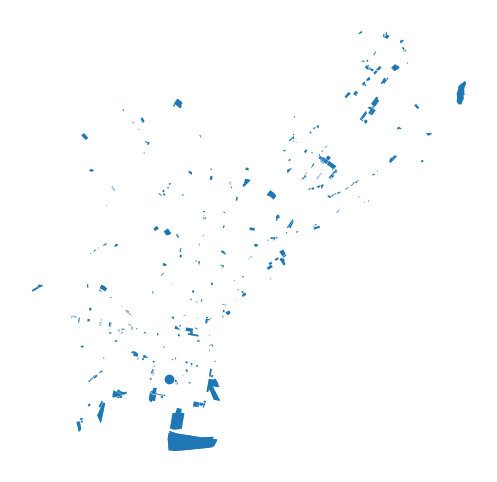
1.4 Downloading street networks
Key functions: graph_from_*
graph_from_place()(docs)- Download street network within an OSM place boundary
graph_from_address()(docs)- Download street network within a certain distance of an address
graph_from_bbox()(docs)- Download street network within a N, S, E, W bounding box
graph_from_point()(docs)- Download street network within a certain distance of a specified point
graph_from_polygon()(docs)- Download street network within a polygon object
Street network around an address
Get streets within 500 meters of the center of Center City
G = ox.graph_from_address("Center City, Philadelphia, PA", dist=500)Project and plot it:
G_projected = ox.project_graph(G)
ox.plot_graph(G_projected);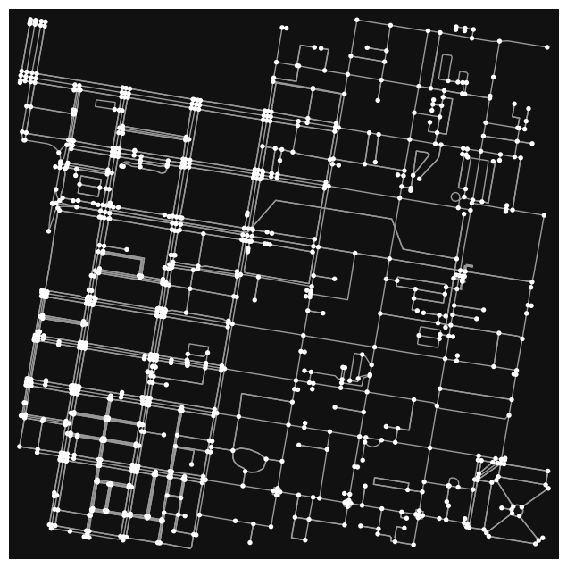
Remove the nodes:
ox.plot_graph(G_projected, node_size=0);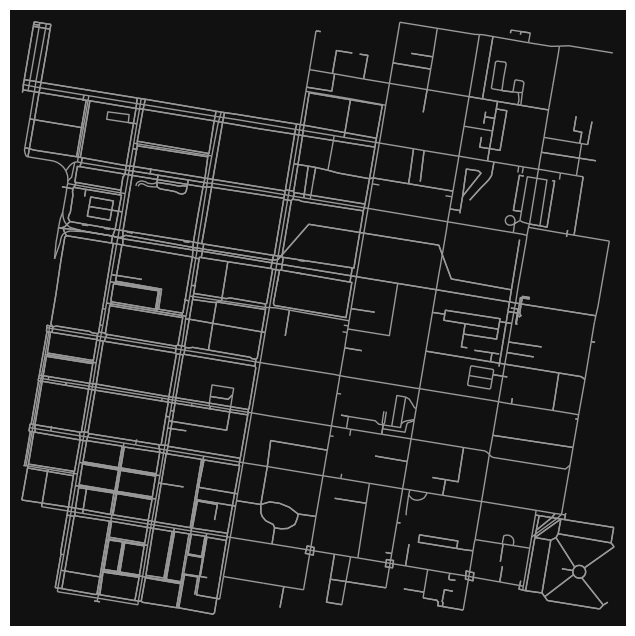
Let’s zoom out to 2,000 meters. This will take a little longer.
G = ox.graph_from_address("Center City, Philadelphia, PA", dist=2000)
G_projected = ox.project_graph(G)ox.plot_graph(G_projected, node_size=0);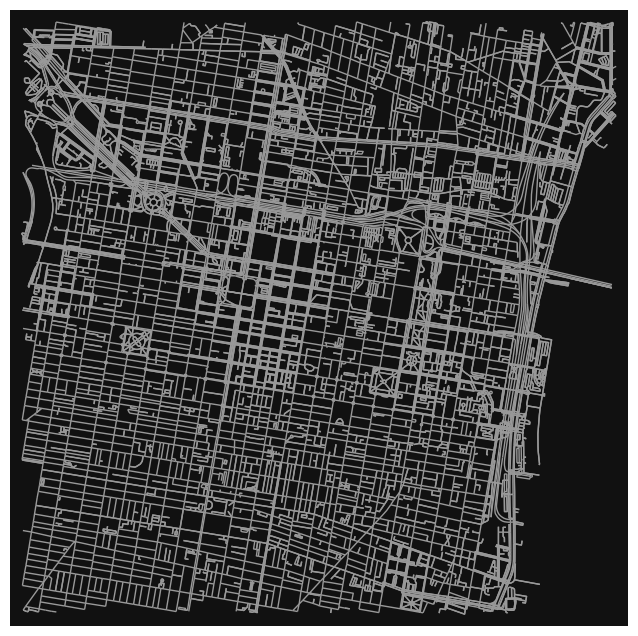
Getting different network types
drive- get drivable public streets (but not service roads)drive_service- get drivable streets, including service roadswalk- get all streets and paths that pedestrians can use (this network type ignores one-way directionality)bike- get all streets and paths that cyclists can useall- download all non-private OSM streets and pathsall_private- download all OSM streets and paths, including private-access ones (default)
# the "drive" network
G = ox.graph_from_address("Center City, Philadelphia, PA", network_type="drive")
ox.plot_graph(G);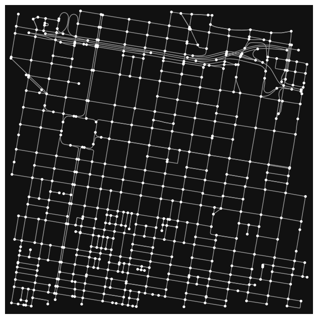
# the "walk" network
G = ox.graph_from_address("Center City, Philadelphia, PA", network_type="walk")
ox.plot_graph(ox.project_graph(G));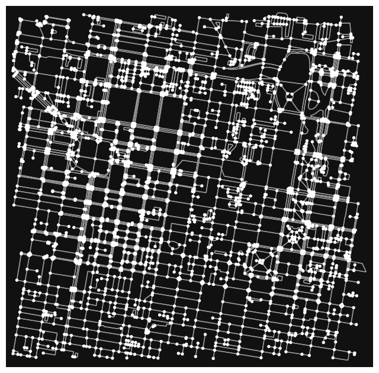
Street network within a place boundary
Use graph_from_place() to get the streets within a specific OSM place.
Caution
A couple of things to watch out for: 1. The place query has to be resolved by OSM. 2. If the place is a big city, you might be downloading a lot of data!
Let’s check out the street network for Berkeley, CA:
Streets within a specific polygon
Example: Let’s download all streets within Center City. We will use the “Central” planning district as a proxy for this area. The city’s planning districts are available on Open Data Philly.
planning_districts = gpd.read_file(
"https://opendata.arcgis.com/datasets/0960ea0f38f44146bb562f2b212075aa_0.geojson"
)planning_districts.head(20)| OBJECTID_1 | OBJECTID | DIST_NAME | ABBREV | Shape__Area | Shape__Length | PlanningDist | DaytimePop | geometry | |
|---|---|---|---|---|---|---|---|---|---|
| 0 | 1 | 14 | River Wards | RW | 2.107270e+08 | 66931.595020 | NaN | NaN | POLYGON ((-75.09798 40.00496, -75.09687 40.005... |
| 1 | 2 | 3 | North Delaware | NDEL | 2.700915e+08 | 89213.074378 | NaN | NaN | POLYGON ((-74.98159 40.05363, -74.98139 40.053... |
| 2 | 3 | 0 | Lower Far Northeast | LFNE | 3.068529e+08 | 92703.285159 | NaN | NaN | POLYGON ((-74.96443 40.11728, -74.96434 40.117... |
| 3 | 4 | 9 | Central | CTR | 1.782880e+08 | 71405.143450 | NaN | NaN | POLYGON ((-75.14791 39.96733, -75.14715 39.967... |
| 4 | 5 | 10 | University Southwest | USW | 1.296468e+08 | 65267.676141 | NaN | NaN | POLYGON ((-75.18742 39.96338, -75.18644 39.963... |
| 5 | 6 | 17 | Upper Northwest | UNW | 2.851603e+08 | 82109.452088 | NaN | NaN | POLYGON ((-75.20629 40.08296, -75.20415 40.081... |
| 6 | 7 | 18 | Upper North | UNO | 2.227549e+08 | 74155.453511 | NaN | NaN | POLYGON ((-75.15584 40.07274, -75.15470 40.072... |
| 7 | 8 | 8 | South | STH | 1.748206e+08 | 65197.355636 | NaN | NaN | POLYGON ((-75.19461 39.94217, -75.19443 39.942... |
| 8 | 9 | 15 | North | NOR | 2.394755e+08 | 75031.769136 | NaN | NaN | POLYGON ((-75.10969 40.02217, -75.10937 40.022... |
| 9 | 10 | 16 | Lower Northwest | LNW | 2.585253e+08 | 88665.925954 | NaN | NaN | POLYGON ((-75.21379 40.04911, -75.21378 40.049... |
| 10 | 11 | 6 | Lower South | LS | 2.440929e+08 | 84999.873989 | NaN | NaN | POLYGON ((-75.20330 39.93792, -75.20127 39.937... |
| 11 | 12 | 1 | Lower Northeast | LNE | 1.651256e+08 | 65717.936510 | NaN | NaN | POLYGON ((-75.09223 40.05355, -75.09213 40.053... |
| 12 | 13 | 2 | Central Northeast | CNE | 2.277140e+08 | 84016.738549 | NaN | NaN | POLYGON ((-75.05403 40.08034, -75.05264 40.079... |
| 13 | 14 | 11 | West | WST | 1.301580e+08 | 67935.761789 | NaN | NaN | POLYGON ((-75.23017 39.97880, -75.23003 39.978... |
| 14 | 15 | 4 | Upper Far Northeast | UFNE | 2.913899e+08 | 95054.419001 | NaN | NaN | POLYGON ((-74.99854 40.12821, -74.99789 40.127... |
| 15 | 16 | 7 | Lower Southwest | LSW | 2.802802e+08 | 86683.850456 | NaN | NaN | POLYGON ((-75.19417 39.87770, -75.19543 39.877... |
| 16 | 17 | 12 | West Park | WP | 1.911916e+08 | 100090.460719 | NaN | NaN | POLYGON ((-75.20387 39.98574, -75.20390 39.985... |
| 17 | 18 | 13 | Lower North | LNO | 1.643847e+08 | 58947.148842 | NaN | NaN | POLYGON ((-75.18686 40.00042, -75.18696 40.000... |
Trim to the central district:
UniversitySW = planning_districts.query("DIST_NAME == 'University Southwest'")And plot it:
ax = ox.project_gdf(UniversitySW).plot(fc="lightblue", ec="gray")
ax.set_axis_off()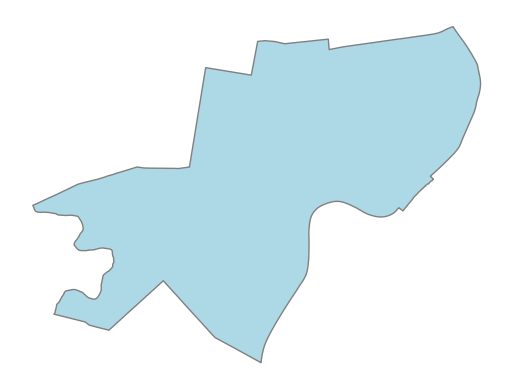
Squeeze it so we can get the geometry polygon:
UniversitySW_outline = UniversitySW.squeeze().geometry
UniversitySW_outline
Now, let’s use ox.graph_from_polygon() to extract streets within this polygon.
# Get the graph
G_UniversitySW = ox.graph_from_polygon(UniversitySW_outline, network_type="drive")# Viola!
ox.plot_graph(ox.project_graph(G_UniversitySW), node_size=0);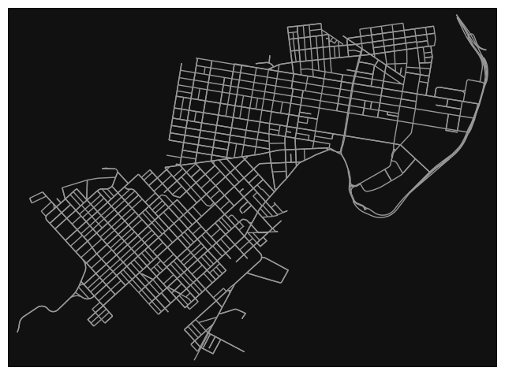
1.5 Converting from a graph to a GeoDataFrame
Key function: ox.graph_to_gdfs() (docs)
You can get a GeoDataFrame for both the nodes (points) and edges (lines)
type(G_UniversitySW)networkx.classes.multidigraph.MultiDiGraph# only get the edges
UniversitySW_edges = ox.graph_to_gdfs(G_UniversitySW, edges=True, nodes=False)# we have lots of data associated with each edge!
UniversitySW_edges.head()| osmid | name | highway | oneway | reversed | length | geometry | lanes | maxspeed | bridge | ref | tunnel | access | |||
|---|---|---|---|---|---|---|---|---|---|---|---|---|---|---|---|
| u | v | key | |||||||||||||
| 109729049 | 110395837 | 0 | 12177237 | South 53rd Street | residential | False | False | 63.895 | LINESTRING (-75.22731 39.94551, -75.22698 39.9... | NaN | NaN | NaN | NaN | NaN | NaN |
| 110395805 | 0 | 12177237 | South 53rd Street | residential | False | True | 61.947 | LINESTRING (-75.22731 39.94551, -75.22745 39.9... | NaN | NaN | NaN | NaN | NaN | NaN | |
| 109729056 | 109729049 | 0 | 12109142 | Hadfield Street | residential | True | False | 158.613 | LINESTRING (-75.22868 39.94454, -75.22731 39.9... | NaN | NaN | NaN | NaN | NaN | NaN |
| 110036974 | 0 | 858930075 | South 54th Street | residential | False | False | 51.815 | LINESTRING (-75.22868 39.94454, -75.22909 39.9... | NaN | NaN | NaN | NaN | NaN | NaN | |
| 110036982 | 0 | 858930075 | South 54th Street | residential | False | True | 61.925 | LINESTRING (-75.22868 39.94454, -75.22818 39.9... | NaN | NaN | NaN | NaN | NaN | NaN |
# plot it like any old GeoDataFrame
ax = UniversitySW_edges.to_crs(epsg=3857).plot(color="gray")
# add the neighborhood boundaries
boundary = gpd.GeoSeries([UniversitySW_outline], crs="EPSG:4326")
boundary.to_crs(epsg=3857).plot(
ax=ax, facecolor="none", edgecolor="red", linewidth=3, zorder=2
)
ax.set_axis_off()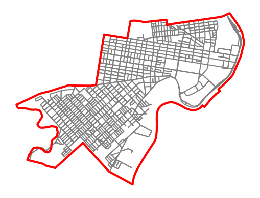
Don’t forget: We can use the .explore() function to get an interactive web map via Folium:
philly_tourism.head()| ref | geometry | ele | gnis:county_id | gnis:created | gnis:feature_id | gnis:state_id | name | tourism | brand | brand:wikidata | brand:wikipedia | operator | artwork_type | historic | source | wikidata | information | artist_name | material | website | addr:state | gnis:county_name | gnis:reviewed | gnis:import_uuid | fee | opening_hours | amenity | artwork_subject | image | start_date | statue | subject:wikidata | colour | wheelchair | wikipedia | addr:city | name:de | designation | description | museum | operator:type | alt_name | barrier | heritage | heritage:operator | heritage:website | nrhp:criteria | nrhp:inscription_date | nrhp:nhl | protection_title | ref:nrhp | source_ref | artist:wikidata | height | name:fr | addr:housenumber | addr:postcode | addr:street | memorial | year_of_construction | name:ru | layer | phone | check_date | contact:email | name:en | board_type | toilets:wheelchair | inscription | subject:wikipedia | level | natural | attraction | note | display | end_date | comment | historic:amenity | garden:type | leisure | postal_code | official_name | internet_access | short_name | parking | guest_house | inscription:url | gender | bicycle | hiking | covered | drinking_water | openfire | addr:unit | mimics | source:url | direction | departures_board | map_size | map_type | direction_north | direction_southeast | direction_west | direction_east | direction_south | direction_northeast | direction_northwest | direction_southwest | nodes | building | building:material | name:hi | building:levels | roof:shape | highway | incline | step_count | building:wikidata | building:wikipedia | check_date:opening_hours | old_name | smoking | building:colour | air_conditioning | fax | rooms | stars | roof:colour | addr:country | contact:fax | contact:phone | ship:type | addr:housename | bar | disused:amenity | roof:material | internet_access:fee | abandoned:amenity | fixme | internet_access:ssid | fee:conditional | shop | roof:levels | name:zh | artist:website | bridge | foot | horse | lit | sac_scale | surface | trail_visibility | width | bridge:structure | man_made | disused:website | boundary | operator:short | operator:wikidata | ownership | protected | building:part | area | subject | contact:facebook | ways | type | place | |||
|---|---|---|---|---|---|---|---|---|---|---|---|---|---|---|---|---|---|---|---|---|---|---|---|---|---|---|---|---|---|---|---|---|---|---|---|---|---|---|---|---|---|---|---|---|---|---|---|---|---|---|---|---|---|---|---|---|---|---|---|---|---|---|---|---|---|---|---|---|---|---|---|---|---|---|---|---|---|---|---|---|---|---|---|---|---|---|---|---|---|---|---|---|---|---|---|---|---|---|---|---|---|---|---|---|---|---|---|---|---|---|---|---|---|---|---|---|---|---|---|---|---|---|---|---|---|---|---|---|---|---|---|---|---|---|---|---|---|---|---|---|---|---|---|---|---|---|---|---|---|---|---|---|---|---|---|---|---|---|---|---|---|---|---|---|---|---|---|---|---|---|---|
| element_type | osmid | ||||||||||||||||||||||||||||||||||||||||||||||||||||||||||||||||||||||||||||||||||||||||||||||||||||||||||||||||||||||||||||||||||||||||||||||||||||||||||||||||||||||||||
| node | 357371322 | NaN | POINT (-75.19580 39.96970) | 17 | 101 | 08/23/2007 | 2347097 | 42 | Bird Lake Picnic Area | picnic_site | NaN | NaN | NaN | NaN | NaN | NaN | NaN | NaN | NaN | NaN | NaN | NaN | NaN | NaN | NaN | NaN | NaN | NaN | NaN | NaN | NaN | NaN | NaN | NaN | NaN | NaN | NaN | NaN | NaN | NaN | NaN | NaN | NaN | NaN | NaN | NaN | NaN | NaN | NaN | NaN | NaN | NaN | NaN | NaN | NaN | NaN | NaN | NaN | NaN | NaN | NaN | NaN | NaN | NaN | NaN | NaN | NaN | NaN | NaN | NaN | NaN | NaN | NaN | NaN | NaN | NaN | NaN | NaN | NaN | NaN | NaN | NaN | NaN | NaN | NaN | NaN | NaN | NaN | NaN | NaN | NaN | NaN | NaN | NaN | NaN | NaN | NaN | NaN | NaN | NaN | NaN | NaN | NaN | NaN | NaN | NaN | NaN | NaN | NaN | NaN | NaN | NaN | NaN | NaN | NaN | NaN | NaN | NaN | NaN | NaN | NaN | NaN | NaN | NaN | NaN | NaN | NaN | NaN | NaN | NaN | NaN | NaN | NaN | NaN | NaN | NaN | NaN | NaN | NaN | NaN | NaN | NaN | NaN | NaN | NaN | NaN | NaN | NaN | NaN | NaN | NaN | NaN | NaN | NaN | NaN | NaN | NaN | NaN | NaN | NaN | NaN | NaN | NaN | NaN | NaN | NaN | NaN | NaN | NaN | NaN | NaN |
| 360500844 | NaN | POINT (-75.19582 39.95352) | NaN | NaN | NaN | NaN | NaN | Hilton Inn at Penn | hotel | Hilton | Q598884 | en:Hilton Hotels & Resorts | Hilton | NaN | NaN | NaN | NaN | NaN | NaN | NaN | NaN | NaN | NaN | NaN | NaN | NaN | NaN | NaN | NaN | NaN | NaN | NaN | NaN | NaN | NaN | NaN | NaN | NaN | NaN | NaN | NaN | NaN | NaN | NaN | NaN | NaN | NaN | NaN | NaN | NaN | NaN | NaN | NaN | NaN | NaN | NaN | NaN | NaN | NaN | NaN | NaN | NaN | NaN | NaN | NaN | NaN | NaN | NaN | NaN | NaN | NaN | NaN | NaN | NaN | NaN | NaN | NaN | NaN | NaN | NaN | NaN | NaN | NaN | NaN | NaN | NaN | NaN | NaN | NaN | NaN | NaN | NaN | NaN | NaN | NaN | NaN | NaN | NaN | NaN | NaN | NaN | NaN | NaN | NaN | NaN | NaN | NaN | NaN | NaN | NaN | NaN | NaN | NaN | NaN | NaN | NaN | NaN | NaN | NaN | NaN | NaN | NaN | NaN | NaN | NaN | NaN | NaN | NaN | NaN | NaN | NaN | NaN | NaN | NaN | NaN | NaN | NaN | NaN | NaN | NaN | NaN | NaN | NaN | NaN | NaN | NaN | NaN | NaN | NaN | NaN | NaN | NaN | NaN | NaN | NaN | NaN | NaN | NaN | NaN | NaN | NaN | NaN | NaN | NaN | NaN | NaN | NaN | NaN | NaN | NaN | |
| 360515304 | NaN | POINT (-75.14860 39.94771) | NaN | NaN | NaN | NaN | NaN | Robert Morris | artwork | NaN | NaN | NaN | NaN | statue | memorial | survey | NaN | NaN | NaN | NaN | NaN | NaN | NaN | NaN | NaN | NaN | NaN | NaN | NaN | NaN | NaN | NaN | NaN | NaN | NaN | NaN | NaN | NaN | NaN | NaN | NaN | NaN | NaN | NaN | NaN | NaN | NaN | NaN | NaN | NaN | NaN | NaN | NaN | NaN | NaN | NaN | NaN | NaN | NaN | NaN | NaN | NaN | NaN | NaN | NaN | NaN | NaN | NaN | NaN | NaN | NaN | NaN | NaN | NaN | NaN | NaN | NaN | NaN | NaN | NaN | NaN | NaN | NaN | NaN | NaN | NaN | NaN | NaN | NaN | NaN | NaN | NaN | NaN | NaN | NaN | NaN | NaN | NaN | NaN | NaN | NaN | NaN | NaN | NaN | NaN | NaN | NaN | NaN | NaN | NaN | NaN | NaN | NaN | NaN | NaN | NaN | NaN | NaN | NaN | NaN | NaN | NaN | NaN | NaN | NaN | NaN | NaN | NaN | NaN | NaN | NaN | NaN | NaN | NaN | NaN | NaN | NaN | NaN | NaN | NaN | NaN | NaN | NaN | NaN | NaN | NaN | NaN | NaN | NaN | NaN | NaN | NaN | NaN | NaN | NaN | NaN | NaN | NaN | NaN | NaN | NaN | NaN | NaN | NaN | NaN | NaN | NaN | NaN | NaN | NaN | |
| 360542779 | NaN | POINT (-75.18932 39.95540) | NaN | NaN | NaN | NaN | NaN | Mario the Magnificent | artwork | NaN | NaN | NaN | NaN | statue | NaN | NaN | Q98563440 | NaN | NaN | NaN | NaN | NaN | NaN | NaN | NaN | NaN | NaN | NaN | NaN | NaN | NaN | NaN | NaN | NaN | NaN | NaN | NaN | NaN | NaN | NaN | NaN | NaN | NaN | NaN | NaN | NaN | NaN | NaN | NaN | NaN | NaN | NaN | NaN | NaN | NaN | NaN | NaN | NaN | NaN | NaN | NaN | NaN | NaN | NaN | NaN | NaN | NaN | NaN | NaN | NaN | NaN | NaN | NaN | NaN | NaN | NaN | NaN | NaN | NaN | NaN | NaN | NaN | NaN | NaN | NaN | NaN | NaN | NaN | NaN | NaN | NaN | NaN | NaN | NaN | NaN | NaN | NaN | NaN | NaN | NaN | NaN | NaN | NaN | NaN | NaN | NaN | NaN | NaN | NaN | NaN | NaN | NaN | NaN | NaN | NaN | NaN | NaN | NaN | NaN | NaN | NaN | NaN | NaN | NaN | NaN | NaN | NaN | NaN | NaN | NaN | NaN | NaN | NaN | NaN | NaN | NaN | NaN | NaN | NaN | NaN | NaN | NaN | NaN | NaN | NaN | NaN | NaN | NaN | NaN | NaN | NaN | NaN | NaN | NaN | NaN | NaN | NaN | NaN | NaN | NaN | NaN | NaN | NaN | NaN | NaN | NaN | NaN | NaN | NaN | NaN | |
| 360777728 | NaN | POINT (-75.19021 39.95230) | NaN | NaN | NaN | NaN | NaN | Pennsylvania Historical Marker: ENIAC, first a... | information | NaN | NaN | NaN | NaN | NaN | NaN | NaN | NaN | board | NaN | NaN | NaN | NaN | NaN | NaN | NaN | NaN | NaN | NaN | NaN | NaN | NaN | NaN | NaN | NaN | NaN | NaN | NaN | NaN | NaN | NaN | NaN | NaN | NaN | NaN | NaN | NaN | NaN | NaN | NaN | NaN | NaN | NaN | NaN | NaN | NaN | NaN | NaN | NaN | NaN | NaN | NaN | NaN | NaN | NaN | NaN | NaN | NaN | NaN | NaN | NaN | NaN | NaN | NaN | NaN | NaN | NaN | NaN | NaN | NaN | NaN | NaN | NaN | NaN | NaN | NaN | NaN | NaN | NaN | NaN | NaN | NaN | NaN | NaN | NaN | NaN | NaN | NaN | NaN | NaN | NaN | NaN | NaN | NaN | NaN | NaN | NaN | NaN | NaN | NaN | NaN | NaN | NaN | NaN | NaN | NaN | NaN | NaN | NaN | NaN | NaN | NaN | NaN | NaN | NaN | NaN | NaN | NaN | NaN | NaN | NaN | NaN | NaN | NaN | NaN | NaN | NaN | NaN | NaN | NaN | NaN | NaN | NaN | NaN | NaN | NaN | NaN | NaN | NaN | NaN | NaN | NaN | NaN | NaN | NaN | NaN | NaN | NaN | NaN | NaN | NaN | NaN | NaN | NaN | NaN | NaN | NaN | NaN | NaN | NaN | NaN |